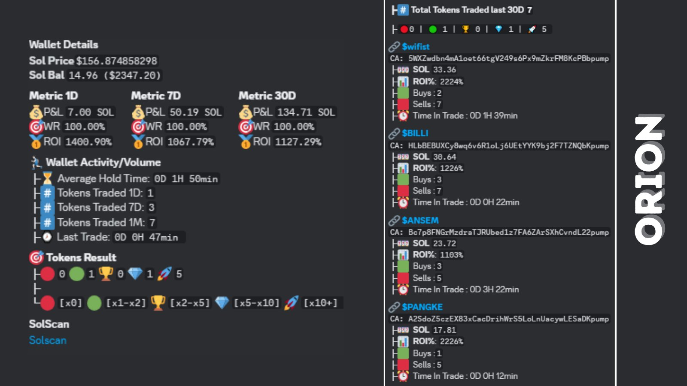
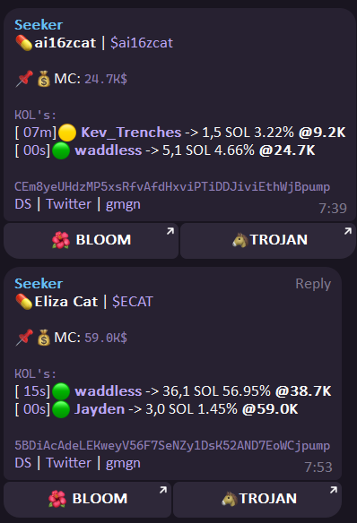
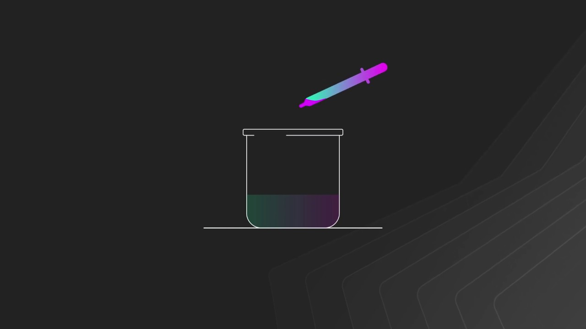

Orion Wallet Analyzer
A Discord-native analytics tool with a clean, intuitive interface. Surfaces PnL, win rate, ROI and full trade history so users make fast, accurate decisions from transparent, well-tracked data.
// C/C++ Embedded · Real-Time & Defense Systems · Spain
Embedded & real-time software engineer. 8+ years building safety-critical systems for defense and railway — now keeping blockchain infrastructure reliable at QuickNode.
8+ years across blockchain infrastructure, railway and defense.
QuickNode
CAF
Indra
Indra
Education B.Sc. Telecommunications Engineering — University of Málaga (2012–2017) · Advanced Degree in Telecom & Computer Systems — I.E.S. Mare Nostrum (2010–2012)
The stack behind production-grade, real-time software.
Side projects around Solana, bots and on-chain tooling.

A Discord-native analytics tool with a clean, intuitive interface. Surfaces PnL, win rate, ROI and full trade history so users make fast, accurate decisions from transparent, well-tracked data.

A lightweight, real-time alert system that fires notifications the moment key on-chain events happen — turning complex blockchain data into clear, actionable insights.

A decentralized voting platform for secure, transparent and verifiable decision-making across any domain — governance, DAOs or community-driven initiatives.
I'm Javier — a Telecommunications Engineer turned embedded software specialist. For most of my career I've written C and Modern C++ for environments where failure isn't an option: aircraft defense laser countermeasures at Indra, and safety-critical railway platforms at CAF.
That work taught me to care about timing, memory, reliability and rigorous validation. Today I bring the same mindset to production blockchain infrastructure at QuickNode — debugging distributed systems and keeping services fast and dependable at scale.
Open to remote roles and relocation. Whether it's embedded/real-time work, production reliability, or a quick technical chat — reach out. Email or Telegram is the fastest way to me.
javierastc@gmail.com